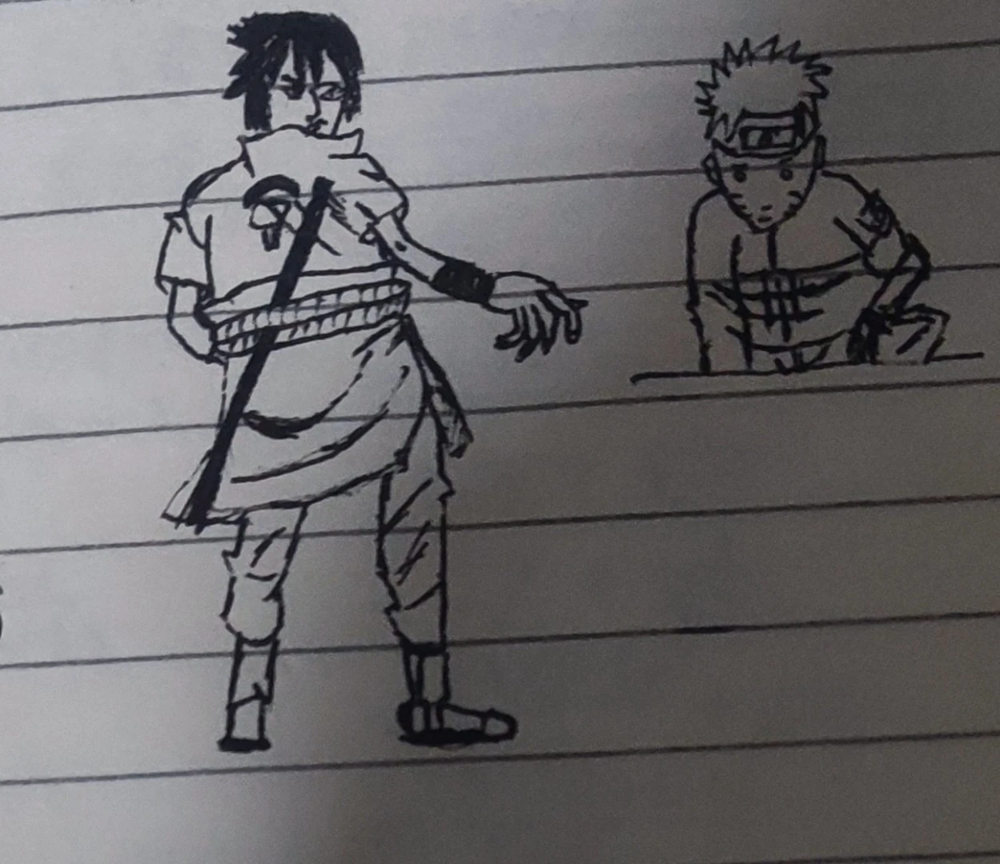
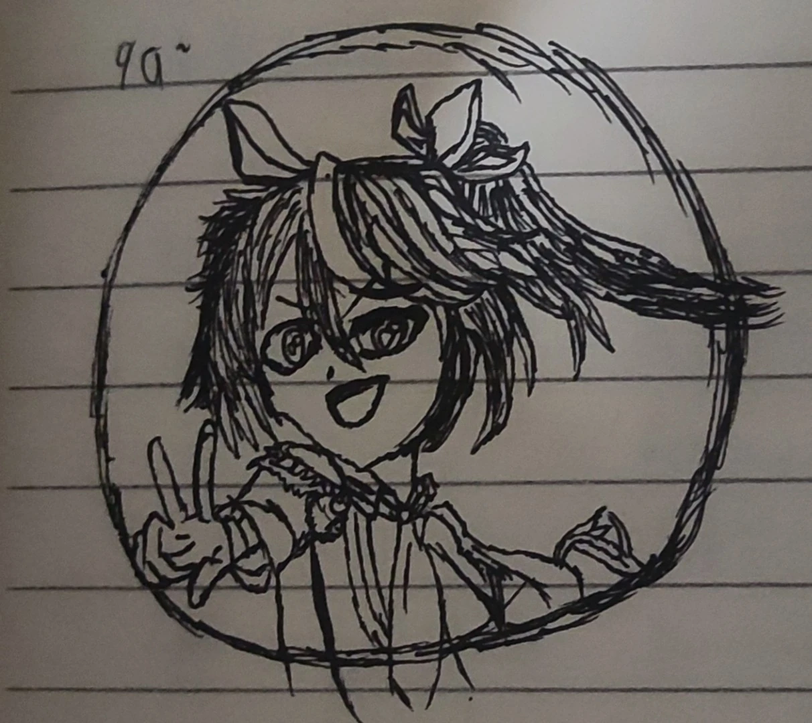

青铜器之乡
青铜Bronze Hoards

103件西周青铜器 · 1976 庄白一号窖藏
一次出土 103 件。其中墙盘内底有 284 字铭文，被叫作「青铜史书」；1890 年任家村出土的大克鼎，也从这里走。原件大多收在宝鸡，来处还在这里。
青铜器之乡1976 庄白窖藏墙盘 284 字大克鼎·任家村
Pixels & Paint
画Art，就是爆炸




谢谢.
— 我愿意认识你，至于我们会成为怎样的朋友，可以交给时间。
任喆 · Kashiu
|
kashiu.douglas@gmail.com

完整个人站有空可以逛逛